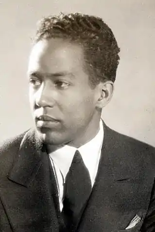
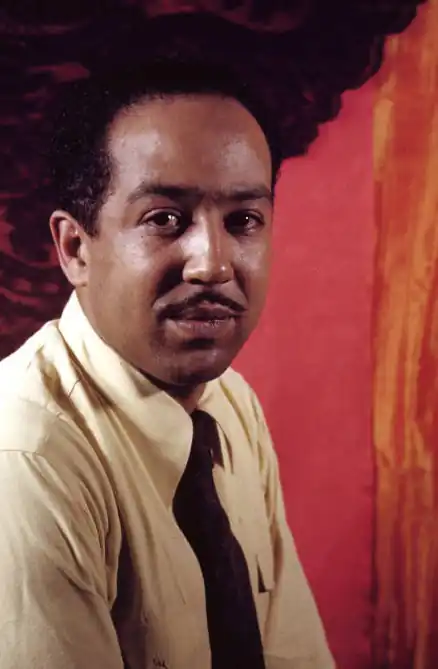

Ленгстон Х'юз народився в містечку Джоплін, штат Міссурі. Хлопчик був другою дитиною в сім'ї шкільної вчительки Керрі (Кароліни) Мерсер Ленгстон та її чоловіка Джеймса Натаніеля Х'юза (1871–1934). Від обох батьків Х'юз успадкував афро-американське, європейське і навіть індіанське коріння. Обидві його бабусі по лінії батька були афроамериканками, а дідусі по батьківській лінії були білими: один мав шотландське походження, а другий єврейське. Ленгстон зростав у гетто.
Х'юз був названий на честь свого батька та двоюрідного діда, Джона Мерсера Ленгстона, який у 1888 році став першим темношкірим американцем обраним до Конгресу США від штату Вірджинія. Його бабуся по лінії матері, Мері Паттерсон, мала афро-американську, французьку, англійську та індійську кров. Вона була однією з найперших жінок, яка навчалась в Оберлінському колледжі. Мері Паттерсон одружилася з Льюїсом Шеріданом Лірі, який також мав змішану кров. Лірі приєднався до людей Джона Брауна під час рейду на Харперс Феррі, в якому зазнав тяжкі поранення та загинув у 1859 році.
В 1869 році Мері Паттерсон одружилась вдруге, її чоловіком став Чарльз Генрі Ленгстон, предками якого були африканці, індіанці та європейці. Він і його молодший брат Джон Мерсер Ленгстон були прибічниками аболіціонізму і вони очолили Огайське товариство боротьби з рабством в 1958 році. Згодом Чарльз Ленгстон переїхав в Канзас, де він працював викладачем та брав активну участь в боротьбі за права темношкірого населення США. У Чарльза та Мері народилась дочка, Кароліна Мерсер Ленгстон, мати Ленгстона Х'юза. Подружжя Х'юзів розпалося, і батько залишив сім'ю. Він поїхав на Кубу, а згодом у Мексику в пошуках спокою від нестерпного расизму, що панував в Сполучених Штатах. Після розлучення батьків, хлопчик мешкав в Канзасі, де його виховувала його бабуся Мері Паттерсон Ленгстон. Завдяки досвіду аболіціоністичної боротьби свого покоління, Мері Ленгстон привила молодому Х'юзу міцне почуття расової гідності. Свої дитячі роки Х'юз провів в містечку Лоуренс, штат Канзас. Після смерті бабусі, він був змушений жити впродовж двох років з друзями сім'ї Х'юз, Джеймсом та Мері Рід. Через нестабільні ранні роки, дитинство його не було щасливим, однак вже тоді Ленгстон почав формуватися як поет. Пізніше, Х'юз проживав в Лінкольні, штат Іллінойс зі своєю матір'ю Керрі, яка вдруге вийшла заміж, коли Ленгстон був ще в підлітковому віці. Згодом сім'я переїхала в Клівленд, штат Огайо, а Х'юз пішов в середню школу. В Лінкольнскій середній школі Ленгстон був обраний поетом в своєму класі. Через багато років Х'юз згадував, що спочатку він вважав, що це лише через стереотип, що нібито афроамериканці мають відчуття ритму. Х'юз говорив: "Я був жертвою стереотипів. В класі було лише двоє темношкірих дітей і наш вчитель англійської мови постійно наголошував на важливості ритму в поезії. Ну, це всі знають, окрім нас, що всі темношкірі мають чуття ритму і ось саме тому мене обрали поетом класу." Впродовж навчання в Клівленді, Ленгстон працював в шкільній газеті і був редактором щорічника, і вже тоді почав писати свої найперші вірші, оповідання та п'єси. Його перший вірш в напрямку джазової поезії, "When Sue Wears Red" (укр. Коли Сью одягається в червоне), був написаний, ще коли він був школярем. Це було у той час, коли Ленгстон зацікавився читанням книжок. Саме в цей період свого життя, Х'юз почав говорити, що найбільший вплив на його твори справили американські поети Пол Лоренс Данбар та Карл Сендберг. Відносини з батьком та Колумбійський університет Х'юз мав тривкі стосунки зі свої батьком. Якийсь час у 1919 році він жив з ним у Мексиці. Відносини були такими напруженими і нещасливими, що не раз це підштовхувало юнака до вчинення самогубства. По завершенні вищої школи в червні 1920 року, Х'юз знову жив з батьком, намагаючись переконати того дати йому грошей на навчання в Колумбійському університеті. Пізніше, перш ніж повернутися до Мексики, Х'юз згадував: " Я розмірковував про дивну нелюбов батька до людей своєї раси. Я не міг цього зрозуміти, адже я був темношкірим і любив всім серцем темношкірих. " Спочатку, його батько сподівався, що його син вступить до якогось іноземного університету та обере собі спеціальність інженера. За таких умов, він був готовий забезпечити своєму сину фінансову підтримку та оплатити навчання. Джеймс Х'юз не розділяв бажання сина стати письменником. Зрештою, їм вдалось прийти до компромісу — Ленгстон мав вивчати інженерію до тих пір, поки буде навчатись в Колумбійському університеті. Після того, як плата за навчання була внесена, він залишив батька, з яким прожив більше року. В університеті Ленгстон отримував доволі непогані оцінки, однак був змушений залишити заклад в 1922 році через постійні расистські випади в свій бік. Також, в ті роки його більш цікавило те, що відбувалось навколо в Гарлема ніж навчання, і вже згодом Х'юз повернувся до написання віршів. Зрілість Довгий час Х'юз не мав постійної роботи. В 1923 році він найнявся до складу екіпажу на борт S.S. Malone, на якому провів 6 місяців, подорожуючи від Західної Африки до Європи. Ленгстон вирішив залишитись в Європі, коли S.S. Malone зробив тимчасову зупинку в Парижі. В ті роки, на початку 1920-их, він приєднався до решти темношкірих емігрантів, що проживали в Парижі. У листопаді 1924 року, Х'юз повернувся на батьківщину та почав жити зі своєю матір'ю у Вашингтоні. З того часу він змінив низку робіт, поки не влащувався особистим помічником історика Картера Г. Вудсона, який працював в Асоціації по дослідженню життя та історії афроамериканців. Невдоволений умовами праці, яка заважала йому займатись літературною діяльністю, Х'юз звільнився та влаштувався помічником офіціанта в готелі, де він мав прибирати брудний посуд. В той час він познайомився з поетом Вейчелом Ліндсеєм, якого вразив своїми віршами. Вже тоді ранні поезії Х'юза публікувались у різних журналах та мали скоро увійти до його першої поетичної збірки. Того ж року, Х'юз був зарахований до лав університету Лінкольна, історичного чорного вищого навчального закладу в окрузі Честер, штат Пенсильванія.